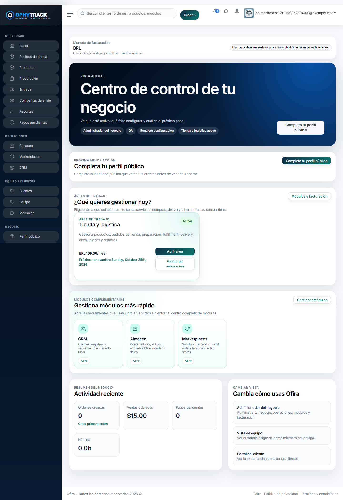
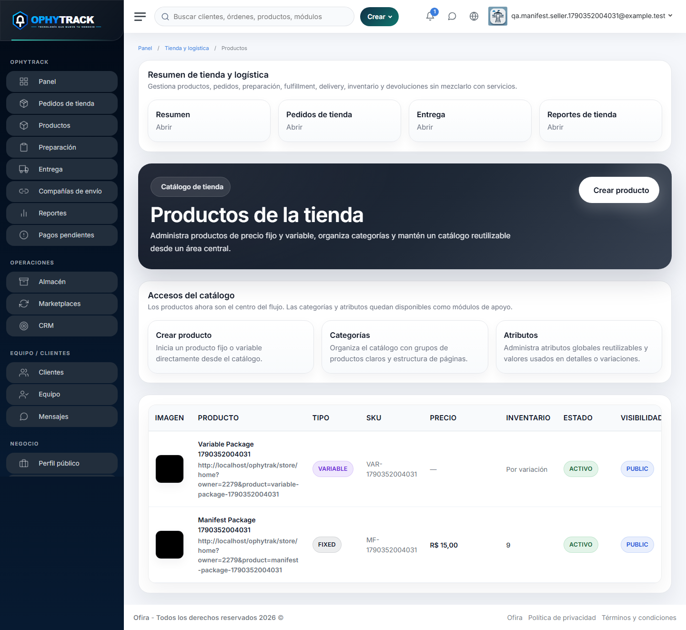
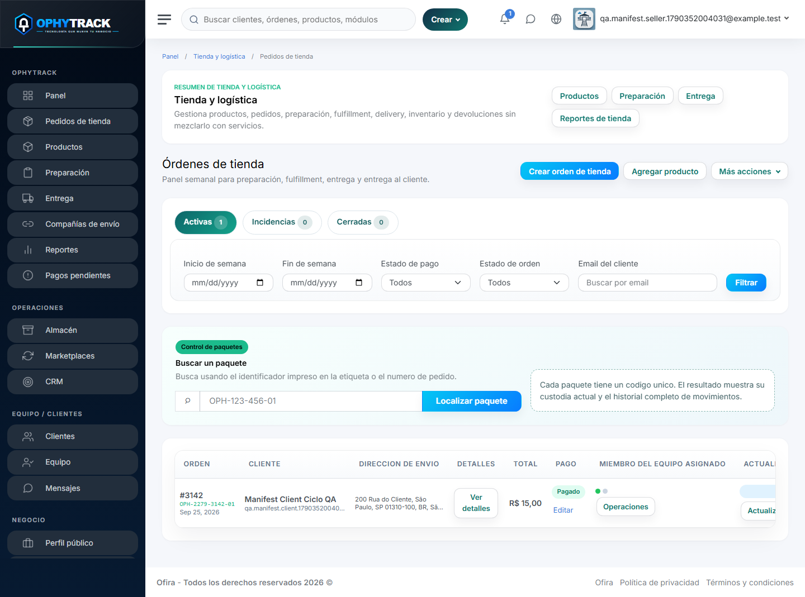
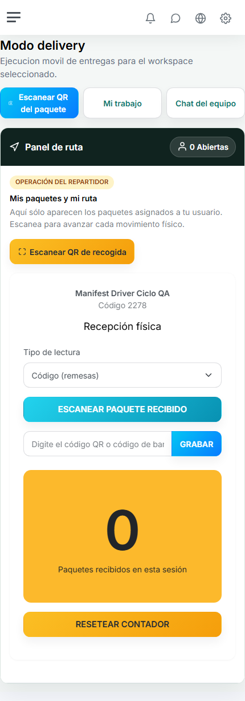
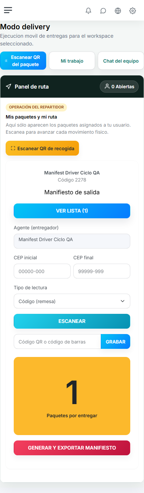
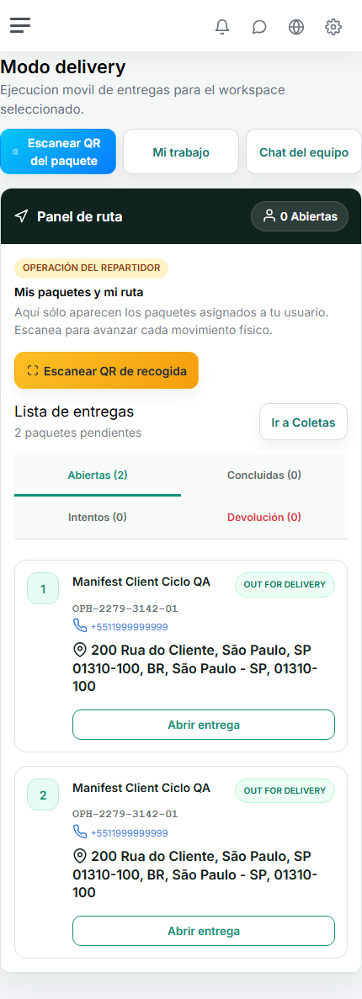
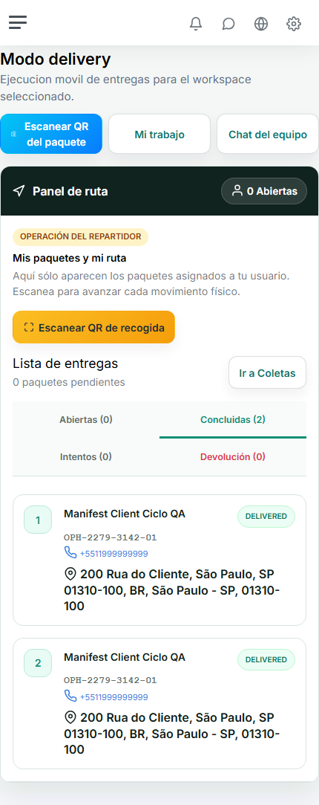
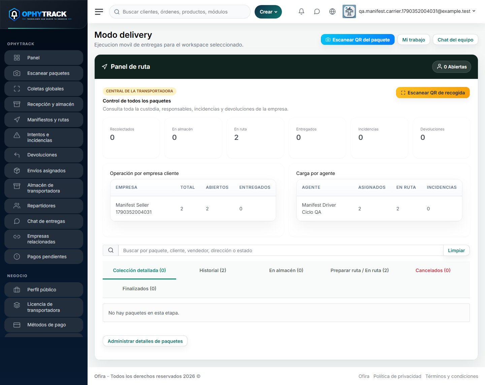
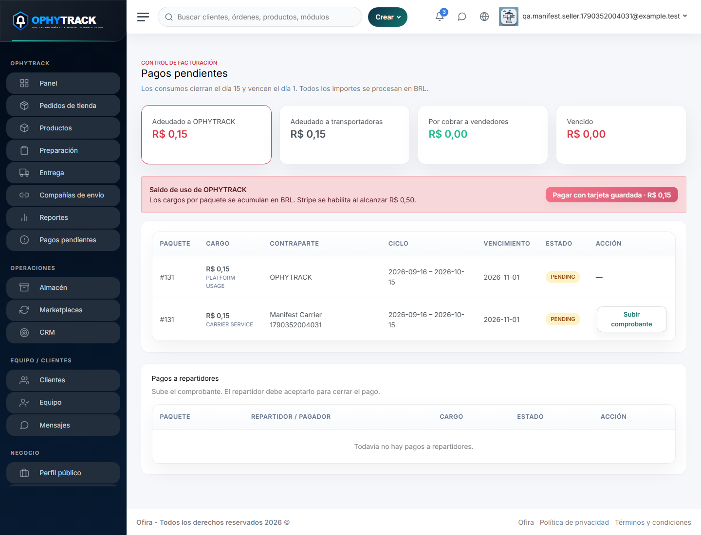
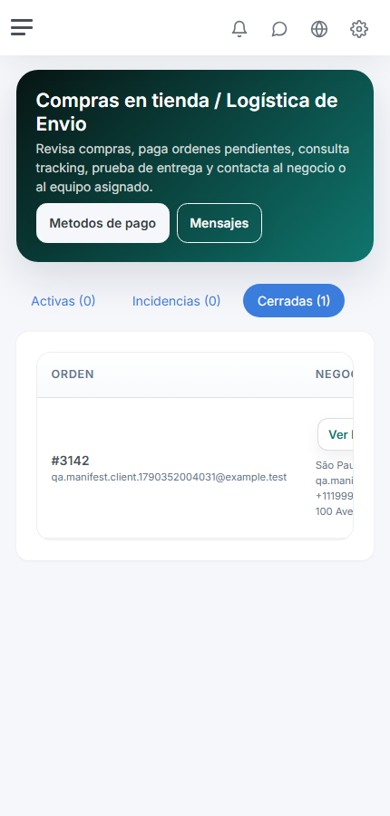

Una guía paso a paso para organizar productos, pedidos, pagos, preparación, transportadoras, entregadores, devoluciones y cierres.
Centraliza la operación posterior a una venta. Permite saber qué se vendió, quién prepara el pedido, quién tiene físicamente el paquete, qué recorrido realizó y quién lo recibió.
Resuelve la pérdida de información entre tienda, almacén, transportadora, repartidor y cliente. Cada lectura del código del paquete registra un movimiento y actualiza su situación para las personas autorizadas.
Consulte dónde está cada paquete: con el vendedor, recolectado, en almacén, en ruta, entregado, con incidencia, cancelado o devuelto.
Administre pedidos creados manualmente, vendidos en su tienda privada o incorporados desde un e-commerce externo.
Cada usuario ve las tareas de su función. El vendedor conserva la vista global y el historial de la operación.
Trabaje con su equipo interno o autorice una empresa de transporte. El sistema separa correctamente custodia, pagos y reportes.
La etiqueta QR acompaña al paquete y cada escaneo confirma el movimiento físico correspondiente.
El comprador puede consultar el avance del pedido y la entrega desde su acceso o enlace autorizado.
La experiencia puede adaptarse al branding de cada empresa. Según el proyecto contratado, puede incluir entorno independiente y una aplicación móvil propia para mejorar identidad y rendimiento.
Su empresa contará con un account manager asignado para apoyar las funciones básicas. Nuevas funciones o adaptaciones exclusivas pueden evaluarse y cotizarse por separado.
Es el responsable de la empresa. Activa el servicio, completa el perfil, administra productos, pedidos, clientes, equipo, transportadoras, pagos y reportes.
Recibe pedidos asignados, separa productos, embala, imprime o consulta la etiqueta y deja el paquete listo para despacho.
Realiza la entrega con el equipo propio de la tienda. Sus entregas y ganancias se atribuyen al vendedor, porque no interviene una transportadora externa.
Recibe paquetes de uno o varios vendedores, supervisa coletas, almacén, agentes, manifiestos, incidencias, devoluciones y valores pendientes.
Escanea y mueve los paquetes que tiene asignados: coleta, recepción física, manifiesto, ruta, entrega o devolución.
Compra, paga cuando corresponde, consulta el seguimiento y recibe el paquete. Sus datos de contacto y dirección acompañan la operación autorizada.
Seleccione el tipo de operación relacionado con tienda, envíos y rastreo. Registre el nombre de la empresa y los datos del responsable.
Ingrese con el correo registrado y complete cualquier validación solicitada.
Registre el medio solicitado para activar el módulo. Revise siempre el valor, la moneda y la renovación antes de confirmar.
Este módulo habilita catálogo, pedidos, preparación, entregas, seguimiento y reportes relacionados.
Agregue nombre comercial, descripción, teléfono, dirección, ciudad, estado, CEP, país, logotipo y demás datos visibles de su empresa.
Confirme idioma, zona horaria y datos fiscales o comerciales antes de comenzar a vender.
No comparta la contraseña principal. Cree un usuario para cada persona y conceda sólo las funciones que necesita.
En este manual, e-commerce significa una plataforma externa donde ya vende, por ejemplo Mercado Libre, Shopee, TikTok Shop o Shopify.
Úselo para una venta telefónica, presencial, por WhatsApp o ya cobrada por otro medio.
El cliente selecciona productos, completa sus datos y paga mediante el botón disponible.
El pedido se incorpora desde una plataforma conectada o mediante la importación disponible.
Abra el pedido pagado y asígnelo a la persona que separará y embalará los productos.
Seleccione equipo propio o una transportadora autorizada. Esta decisión determina la custodia y los cobros posteriores.
Compruebe productos, cantidades, protección del contenido y observaciones del cliente.
La etiqueta contiene el código único del paquete, destinatario y dirección. Debe permanecer legible y adherida al paquete correcto.
El paquete permanece con el vendedor hasta que el entregador propio lo reciba o la transportadora haga la primera coleta.
La tienda conserva la responsabilidad logística. No existe una transportadora externa en esta operación.
El vendedor. La ganancia generada por el paquete se suma a las obligaciones del vendedor con su propio repartidor.
No se genera un servicio por pagar a una transportadora, porque ninguna empresa externa recibió la custodia.
En Compañías de envío, busque la empresa y cree la relación. Esto no entrega paquetes automáticamente: sólo autoriza la operación.
Durante la asignación, elija entrega externa. El paquete continúa con el vendedor hasta el primer escaneo real.
El agente de la transportadora escanea la etiqueta en el local del vendedor. El paquete pasa a Recolectado y entra bajo custodia de la transportadora.
Al llegar a la sede o almacén, se escanea nuevamente. El paquete cambia a Recibido en almacén.
El repartidor escanea los paquetes de su ruta. Se crea la lista ordenada y puede exportarse a Excel.
Al generar el manifiesto, los paquetes pasan a la pantalla de entregas. El repartidor registra el resultado al llegar al destino.
| Sección | Para qué sirve | Resultado |
|---|---|---|
| Entregas | Separa abiertas, concluidas, intentos y devoluciones. | El repartidor sabe qué debe atender. |
| Colección detallada | Registra varios paquetes, persona que los entrega y firma. | Confirma la coleta como lote. |
| Historial de colección | Consulta códigos, fecha y hora dentro de un período. | Permite auditar lo recolectado. |
| Recepción física | Escanea paquetes que llegan al almacén. | Confirma ingreso físico. |
| Manifiesto de salida | Agrupa la ruta, ordena paquetes y exporta la lista. | Activa los paquetes para entrega. |
| Alteración de agente | Transfiere paquetes a otro repartidor autorizado. | Actualiza responsable y manifiesto. |
| Sector de devolución | Identifica paquetes cancelados o que deben regresar. | Separa la logística inversa. |
| Mis ganancias | Consulta entregas, períodos, créditos, débitos y total pendiente. | Facilita el cierre con la empresa. |
Si el cliente está ausente, rechaza el paquete o existe otro impedimento, el repartidor selecciona el motivo y escribe una observación. El paquete queda en Intentos y puede volver al almacén para una nueva salida.
Si el cliente informa una cancelación durante la ruta, la transportadora registra la cancelación. El paquete pasa al sector de devolución y debe regresar al vendedor.
Valor de configuración vigente al emitir este manual. Consulte su propuesta comercial por cambios futuros.
| Concepto | Quién lo paga | A quién corresponde |
|---|---|---|
| Licencia o plan activo | Empresa que contrata OPHYTRACK | Acceso al sistema |
| Uso por paquete | Vendedor | OPHYTRACK |
| Servicio de transportadora | Vendedor | Transportadora externa |
| Ganancia de repartidor externo | Transportadora | Su repartidor |
| Ganancia de repartidor propio | Vendedor | Su miembro de equipo |
| Tarifas del medio de pago | Según acuerdo comercial | Stripe, PayPal u otro proveedor |
El valor del flete y la ganancia del repartidor pueden configurarse o acordarse por separado. No deben confundirse con la tarifa de uso de OPHYTRACK.
Totales vendidos, pagos, clientes, productos y situación de cada orden.
Pedidos pendientes, asignados, preparados y listos para despacho.
Paquetes recolectados, en almacén, en ruta, entregados o con incidencias.
Paquetes que deben volver al vendedor y confirmación de su recepción.
Uso de plataforma, servicios de transporte y obligaciones con repartidores.
Hoy, ayer, quincena actual, quincena anterior o fechas personalizadas.
Solicite ayuda para configuración inicial, explicación de funciones básicas, revisión del flujo de su empresa, capacitación de usuarios o análisis de una incidencia operativa.
Si necesita nuevas reglas, reportes, integraciones, branding, servidor independiente o aplicación móvil propia, describa el objetivo y el volumen esperado. El equipo evaluará alcance, plazo y costo adicional.
Cada escaneo debe representar un movimiento físico real. Así, vendedor, transportadora, repartidor y cliente consultan la misma historia del paquete.
Desde el panel principal se accede a pedidos, productos, preparación, entrega, compañías de envío, reportes, almacén, marketplaces, clientes, equipo y pagos pendientes.

Captura real de una empresa de prueba creada para validar este manual. Los datos visibles son demostrativos.

Catálogo utilizado para preparar las ventas.

Control de pedidos y acceso a la etiqueta del paquete.

Segundo movimiento: recepción física en el almacén.

Preparación del manifiesto con contador de paquetes.

Paquetes organizados para la ruta diaria.

Resultado disponible después de registrar la entrega.

Vista global de la transportadora: estados, empresa cliente y carga por agente.

Valores pendientes y cierres operativos.

El cliente consulta sus pedidos cerrados.